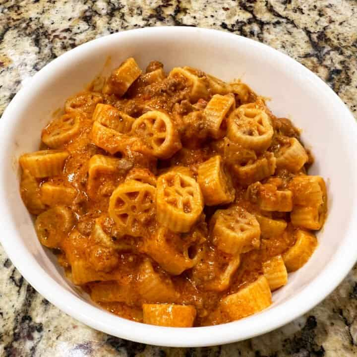

Instant Pot Chuckwagon Pasta

This one features wagon wheels in a tomato-based meat sauce with a smooth, cheesy finish and is made in your Instant Pot in under 20 minutes with less than 10 ingredients. It's called Chuckwagon Pasta and it's a bandwagon you're about to get on.
-
1/4 cup extra virgin olive oil
-
1 medium yellow onion
-
1 1/2 pounds ground meat (see Jeff's Tips)
-
1 tablespoon Worcestershire sauce
-
3 1/2 cups broth of your choice (I used 3 1/2 teaspoons Garlic Better Than Bouillon plus 3 1/2 cups water)
-
3 1/2 cups marinara sauce (I use Rao's or Victoria), divided (1 1/2 before and 2 cups after, preferably at room temperature)
-
1 (1-ounce) packet taco seasoning (optional)
-
1 pound wagon wheel (or mini wagon wheel) pasta (see Jeff's Tips)
-
3 cups shredded cheddar cheese
-
5.2-ounce package Boursin or herb cheese
-
Add the olive oil to the Instant Pot. Hot Sauté and Adjust so it's on the More or High setting. After 3 minutes of the oil heating, add the onion and sauté for 2-3 minutes, until translucent.
-
Add the ground meat and break it up with a wooden spatula or spoon. Sauté for 3 minutes until it becomes crumbled and lightly browned.
-
Add the Worcestershire sauce and deglaze (scrape) the bottom of the pot to get any browned bits up.
-
Add the broth, 1 1/2 cups of the marinara sauce, and taco seasoning (if using). Stir well. Add the pasta but do not stir. Simply smooth out with a mixing spoon so it's submerged,
-
Secure the lid, move the valve to the sealing position, hit Cancel followed by Manual or Pressure Cook at High Pressure for 6 minutes. Quick release when done.
-
Add the remaining 2 cups of marinara, cheddar and Boursin. Stir for about a minute until the cheese blends into the sauce. Serve and enjoy!